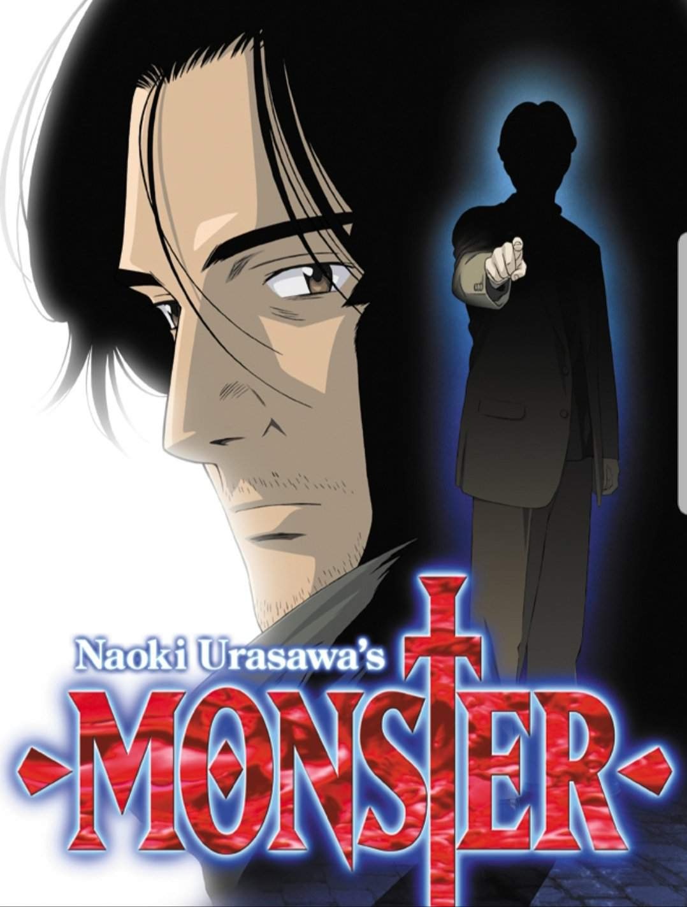

ОписаниеДействие происходит в Германии, в Дюссельдорфе. Неизвестный проникает в дом
семьи Либертов,
убивает
родителей и простреливает их сыну голову, не трогает лишь его сестру, которая забывает всё от шока. В том же
городе работает гениальный японский нейрохирург Кэндзо Тэмма, сумевший спасти жизнь мальчика.
Спустя много лет раненого человека привозят в госпиталь. Спасши ему жизнь, Кэндзо узнаёт, что тот причастен
к
продолжающимся в Германии серийным убийствам. Вскоре и Кэндзо оказывается замешан в этом деле, когда у него
на
глазах тот самый спасённый ребёнок, выросший теперь в юношу, хладнокровно убивает спасённого человека.
Кэндзо предстоит очистить своё имя, узнать о спасённом им много лет назад ребёнке и переосмыслить саму
ценность
жизней, которые он спасает, работая хирургом.
АвторНаоки Урасава (яп. 浦沢 直樹 Урасава Наоки) — известный мангака, работающий в
области
сэйнэн-манги.
Среди
наиболее популярных работ можно назвать 20th Century Boys, Master Keaton и Monster.
Наоки Урасава родился 2 января 1960 года в Токио, окончил университет Мэйсэй по специальности экономика.
Мангой заинтересовался ещё в школе. Дебютировал в 1981 году с мангой Return, получившей премию издательства
«Сёгакукан» в 1990 году. Он дважды получал премию издательства «Сёгакукан», дважды — приз Тэдзуки Осаму за
достижения в области культуры и один раз премию манги издательства «Коданся».
Три его работы были экранизированы в виде аниме: Yawara!, Master Keaton и Monster.

Кэндзо ТэммаГлавный герой аниме и манги. Молодой нейрохирург, любящий свою работу и
способный с блеском
провести даже самую сложную операцию. Родился 2 января 1958 года в Йокогаме (префектура Канагава). Таким
образом, по происхождению японец, но живёт и работает в Дюссельдорфе. Благодаря своим талантам находится на
особом счету у директора госпиталя, господина Хайнемана, и даже встречается с его дочерью, Евой. Поначалу
доктор Тэмма мечтает посвятить себя науке и заниматься исследованиями, но затем его позиция меняется:
считает, что спасение жизни — наивысшая цель врача. В любом случае, всегда достойно и добросовестно
выполняет свои врачебные обязанности, вкладывая в них душу. Кэндзо — человек высоких моральных принципов,
готовый нести ответственность за собственные ошибки.
Йохан Вильгельм Либерт Получил тяжелое ранение в голову, но был спасен доктором
Тэммой. Говорит, что тот ему «как отец». Йохан часто меняет место жительства и называется фальшивыми
именами: Эрих, Михаэль, Франц и др.
Через девять лет он появляется в облике красивого молодого человека со светлыми волосами, прилежного
студента Мюнхенского университета. Прошлое Йохана неизвестно, но ясно, что он очень умен и обладает
необыкновенной харизмой, позволяющей ему манипулировать другими людьми.
Автор статьи: Пискун А.В.Опубликовано: 10.10.2020